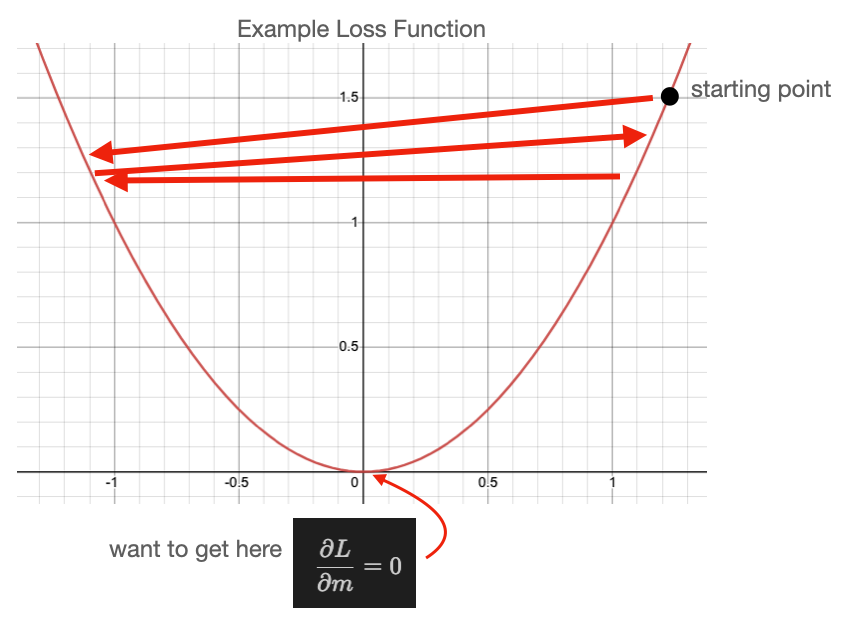
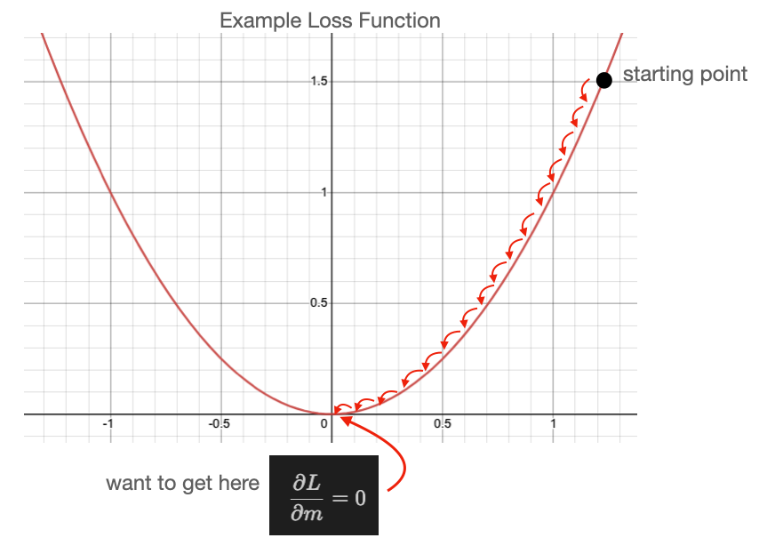
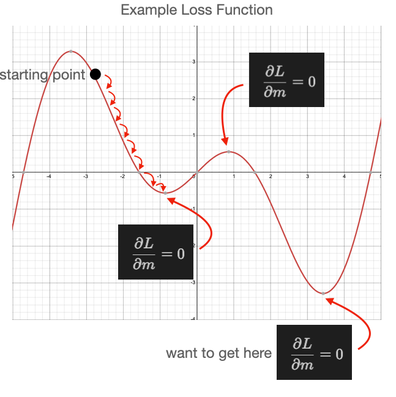
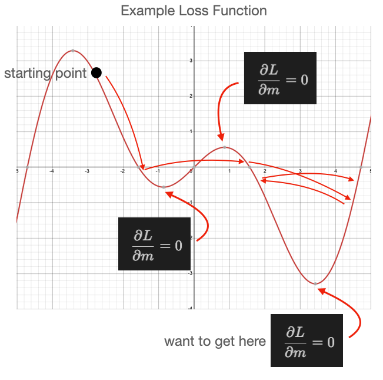
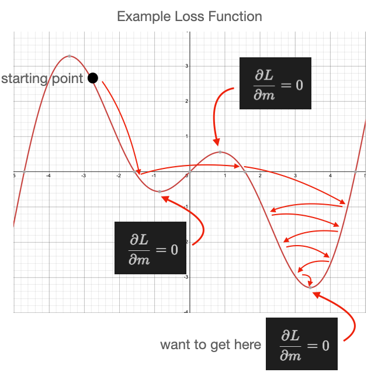

{kind=link}
{kind=link}
{kind=link}
{kind=link}
import ambivalent
import matplotlib.pyplot as plt
import seaborn as sns
plt.style.use(ambivalent.STYLES['ambivalent'])
sns.set_context("notebook")
plt.rcParams["figure.figsize"] = [6.4, 4.8]
import pandas as pd
import numpy as np
import matplotlib.pyplot as plt
import IPython.display as ipydis
import timeArtificial intelligence in a nutshell
ai4science
An introduction to AI training, large language models, and a simple AI model example using linear regression.
In this notebook, we will talk about:
- What is AI training?
- How does large language model work?
- A simple AI model: linear regression
How to run this notebook on Polaris
- Go to https://jupyter.alcf.anl.gov, and click “Login Polaris”
- After login, select
ALCFAITPproject andALCFAITPqueue during the lecture (usedebugqueue outside of the lecture) - Load the notebook and select “datascience/conda-2023-01-10” python kernel
How to run this notebook on Google Colab
- Go to https://colab.research.google.com/, sign in or sign up
- “File”-> “open notebook”
- choose
01_intro_AI_on_Supercomputer/01_linear_regression_sgd.ipynbfrom the list

What is AI training?
Two ways of learning English:
- through learning rules;
- through hearing a lot of speakings
I learned English in my middle school, and memorized a lot of grammar rules in my mind. Every time when I speak, I try to follow the grammar rules as much as I can. But I always break the rules.
However, my daugher learned English differently. She learns speaking by hearing a lot of speaking from TV, teachers, classmates, and her older brother. The fact is that, she seldomly breaks grammar rules. This way of learning by observing patterns is very powerful! This is the essence of AI or data driven science.
How does large language model work?
Large Language Models, like GPT, function by pre-training on extensive datasets to learn language patterns, utilizing transformer architecture for contextual understanding, and can be fine-tuned for specific tasks, enabling them to generate coherent and contextually relevant text based on provided inputs.
More complicated example:
You can do this on https://chat.openai.com
Simplest AI model example: linear regression
This example is adopted from Bethany Lusch, ALCF.
Linear regression is the simplest example learning from existing data for future prediction.
We’re going to review the math involved in this process to help understand how training an AI works.
First we will load some tools that others wrote and we can use to help us work.
- Pandas: a toolkit for working with row vs. column data, like excel sheets, and CSV (Comma Seperated Values) files.
- Numpy: a toolkit for managing arrays, vectors, matrices, etc, doing math with them, slicing them up, and many other handy things.
- Matplotlib: a toolkit for plotting data
Dataset
We used a realestate dataset from Kaggle to produce this reduced dataset. This dataset contains the sale price and above ground square feet of many houses. We can use this data for our linear regression.
We use Pandas to read the data file which is stored as Comma Separated Values (CSV). and print the column labels. CSV files are similar to excel sheets.
Index(['Unnamed: 0', 'SalePrice', 'GrLivArea'], dtype='object')Now pandas provides some helpful tools for us to inspect our data. It provides a plot() function that, behind the scenes, is calling into the Matplotlib library and calling the function matplotlib.pyplot.plot(). In this case, we simply tell it the names of the columns we want as our x and y values and the style ('.' tells matplotlib to use a small dot to represent each data point).
{kind=link}
Theory of linear regression
The goal of learning regression is to find a line that is closest to all the points.
The slope and intercept of such a line y = m x + b can be found as:
m = { n (\Sigma xy) - (\Sigma x) (\Sigma y) \over n (\Sigma x^2) - (\Sigma x)^2 }
b = { (\Sigma y) (\Sigma x^2) - (\Sigma x) (\Sigma xy) \over n (\Sigma x^2) - (\Sigma x)^2 }
Details derivation of this can be found here.
We’ll break this calculation into a few steps to help make it easier.
First lets define x and y. x will be our above ground square footage and y will be sale price. In our equations we have a few different values we need, such as n which is just the number of points we have:
Then we need our x and y by selecting only the column we care about for each one. Note about data formats: data is a Pandas DataFrame object which has rows and columns; data['GrLivArea'] is a Pandas Series object which only has rows; then we also convert from Pandas data formats (in this case a Series) to Numpy data formats using the to_numpy() function which is part of the Pandas Series object.
Now we will calculate \Sigma xy, \Sigma x, \Sigma y, and \Sigma x^2:
The denominator in the equation for m and b are the same so we can calculate that once:
Then we can calculate our fit values:
y = 87.688145 * x + 34754.077892Now we can plot the fit results with our data to see how we did.
First we define a plotting function because we’re going to do this often and we want to reuse our code:
def plot_data(x,y,m,b,plt = plt):
# plot our data points with 'bo' = blue circles
plt.plot(x,y,'bo')
# create the line based on our linear fit
# first we need to make x points
# the 'arange' function generates points between two limits (min,max)
linear_x = np.arange(x.min(),x.max())
# now we use our fit parameters to calculate the y points based on our x points
linear_y = linear_x * m + b
# plot the linear points using 'r-' = red line
plt.plot(linear_x,linear_y,'r-',label='fit')Now can use this function to plot our results:
{kind=link}
Training through Stochastic Gradient Descent (SGD)
SGD is a common method in AI for training deep neural networks on large datasets. It is an iterative method for optimizing a loss function that we get to define. We will use this simple linear regression to demonstrate how it works.
The model
In AI, neural networks are often referred to as a model because, once fully trained, they should model (AKA predict) the behavior of our system. In our example, the system is how house prices vary based on house size. We know our system is roughly driven by a linear function:
\hat{y_i}(x_i) = m * x_i + b
We just need to figure out m and b. Let’s create a function that calculates our model given x, m, and b.
The Loss Function
A loss function, or objective function, is something we define and is based on what we want to achieve. In the method of SGD, it is our goal to minimize (or make close to zero) the values calculated from the loss function. In our example, we ideally want the prediction of our model to be equal to the actual data, though we will settle for “as close as possible”.
So we will select our loss function to be the Mean Squared Error function:
L(y_i,\hat{y_i}) = (y_i - \hat{y_i}(x_i))^2
where y_i is our i^{th} entry in the data['SalePrice'] vector and \hat{y_i} is the prediction based on evaluting m * x_i + b.
This function looks like the figure below when we plot it with x=y_i - \hat{y_i}(x_i) and we we want to be down near y_i - \hat{y_i}(x_i) = 0 which indicates that our y_i is as close as possible to \hat{y_i}.
{kind=link}
Here we crate a function that calculates this for us.
Minimizing the Loss Function
We want to use the loss function in order to guide how to update m and b to better model our system. In calculus we learn to minimize a function with respect to a variable you calculate the partial derivative with respect to the variable you want to vary.
{ \partial L \over \partial m } = 0
The location of the solution to this is the minimum as shown in the figure above. We can write down the partial derivative of the loss function as:
{ \partial L \over \partial m } = -2 x_i (y_i - \hat{y_i}(x_i)) { \partial L \over \partial b } = -2 (y_i - \hat{y_i}(x_i))
We can use this to calculate an adjustment to m and b that will reduce the loss function, effectively improving our fitting parameters. This is done using this equation:
m' = m - \eta { \partial L \over \partial m } b' = b - \eta { \partial L \over \partial b }
Here our original m and b are adjusted by the partial derivative multiplied by some small factor, \eta, called the learning rate. This learning rate is very important in our process and must be tuned for every problem.
In our example, the selection of the learning rate essentially defines how close we can get to the minimum, AKA the best fit solution. This figure shows what happens when we pick a large learning rate. We first select a starting point in our loss function (typically randomly), then every update from m/b to m'/b' results in a shift to somewhere else on our loss function (following the red arrows). In this example, our learning rate (\eta) has been selected too large such that we bounce back and forth around the minimum, never reaching it.

If we select a smaller learning we can see better behavior in the next figure.

Though, keep in mind, too small a learning rate results is so little progress toward the minimum that you may never reach it!
A pit fall of SGD that one must be aware of is when your loss function is complex, with many minima. The next figure shows such a case, in which we select a small learning rate and our starting point happens to be near a local minimum that is not the lowest minimum. As shown, we do reach a minimum, but it isn’t the lowest minimum in our loss function. It could be that we randomly select a starting point near the minimum we care about, but we should build methods that are more robust against randomly getting the right answer.

Then, if we increase our learning rate too much, we bounce around again.

What we want to do in this situation is start with a large learning rate and slowly reduce its size as we progress. That is shown in this next figure.

As you can see, this process is not perfect and could still land in a local minimum, but it is important to be aware of these behaviors as you utilize SGD in machine learning.
So let’s continue, we’ll build functions we can use to update our fit parameters, m and b.
Putting it together
We can now randomly select our initial slope and intercept:
Then we can calculate our Loss function:
first 10 loss values: [3.03421561e+10 3.55511025e+10 1.24579082e+10 1.91656336e+10
1.60604929e+10 2.04432804e+10 1.72410030e+10 1.76517796e+10
1.52769600e+10 2.18152900e+10]y_i = 5.47 * x + 1000.00 previously calculated: y_i = 87.69 * x + 34754.08{kind=link}
# set our initial slope and intercept
m = 5.
b = 1000.
# batch_size = 60
# set a learning rate for each parameter
learning_rate_m = 1e-7
learning_rate_b = 1e-1
# use these to plot our progress over time
loss_history = []
# convert panda data to numpy arrays, one for the "Ground Living Area" and one for "Sale Price"
data_x = data['GrLivArea'].to_numpy()
data_y = data['SalePrice'].to_numpy()
# we run our loop N times
loop_N = 30
for i in range(loop_N):
# update our slope and intercept based on the current values
m = updated_m(data_x,data_y,m,b,learning_rate_m)
b = updated_b(data_x,data_y,m,b,learning_rate_b)
# calculate the loss value
loss_value = np.mean(loss(data_x,data_y,m,b))
# keep a history of our loss values
loss_history.append(loss_value)
# print our progress
print('[%03d] dy_i = %.2f * x + %.2f previously calculated: y_i = %.2f * x + %.2f loss: %f' % (i,m,b,m_calc,b_calc,loss_value))
# close/delete previous plots
plt.close('all')
# create a 1 by 2 plot grid
fig,ax = plt.subplots(1,2,figsize=(18,6),dpi=80)
# lot our usual output
plot_data(data_x,data_y,m,b,ax[0])
# here we also plot the calculated linear fit for comparison
line_x = np.arange(data_x.min(),data_x.max())
line_y = line_x * m_calc + b_calc
ax[0].plot(line_x,line_y,'b-',label='calculated')
# add a legend to the plot and x/y labels
ax[0].legend()
ax[0].set_xlabel('square footage')
ax[0].set_ylabel('sale price')
# plot the loss
loss_x = np.arange(0,len(loss_history))
loss_y = np.asarray(loss_history)
ax[1].plot(loss_x,loss_y, 'o-')
ax[1].set_yscale('log')
ax[1].set_xlabel('loop step')
ax[1].set_ylabel('loss')
plt.show()
# gives us time to see the plot
time.sleep(2.5)
# clears the plot when the next plot is ready to show.
ipydis.clear_output(wait=True)[029] dy_i = 88.89 * x + 32912.24 previously calculated: y_i = 87.69 * x + 34754.08 loss: 1478200827.641291{kind=link}
Homework
Mini Batch Training
In AI, datasets are often very large and cannot be processed all at once as is done in the loop above. The data is instead randomly sampled in smaller batches where each batch contains batch_size inputs.
How can you change the loop above to sample the dataset in smaller batches?
Hint: Our data variable is a Pandas DataFrame object, search for “how to sample a DataFrame”.
Instead of using the entire dataset like:
Use
You also have to adjust the loop_N accordingly to make sure that it loop over the entire datasets the same number of times.
Please plot your learning curve for different batch size, such as 32, 64, 128, 256, 512.
Learning rate issue (Bonus)
As described above, if the learning rate is too large, it will affect the convergence. Do your training with (batch_size = 64, learning_rate_m = 1e-7, learning_rate_b = 1e-1). Then linearly increase the batch size and learning rate until you see the training does not converge.
(64, 1e-7, 1e-1)*1
(64, 1e-7, 1e-1)*2
(64, 1e-7, 1e-1)*4
(64, 1e-7, 1e-1)*8
...How to submit your homework
- Fork the github repo to your personal github
- Make change to the 01_linear_regression_sgd.ipynb, and then push to your personal github
- Provide the link of 01_linear_regression_sgd in the personal github.
Homework answer
Let us define a train function which allow us to try different hyperparameter setups.
x = data['GrLivArea'].to_numpy()
y = data['SalePrice'].to_numpy()
def train(batch_size, epochs=30, learning_rate_m = 1e-7, learning_rate_b = 1e-1):
loss_history = []
num_batches = len(data)//batch_size
loop_N = epochs*num_batches
m = 5.
b = 1000.
for i in range(loop_N):
data_batch = data.sample(batch_size)
data_x = data_batch['GrLivArea'].to_numpy()
data_y = data_batch['SalePrice'].to_numpy()
# update our slope and intercept based on the current values
m = updated_m(data_x,data_y,m,b,learning_rate_m)
b = updated_b(data_x,data_y,m,b,learning_rate_b)
# calculate the loss value
loss_value = np.mean(loss(data_x,data_y,m,b))
# keep a history of our loss values
loss_history.append(loss_value)
#loss_last_epoch = np.sum(loss_history[-num_batches:]*batch_size)/len(data)
return m, b, np.mean(loss(x,y,m,b))Minibatch training
previously calculated: y_i = 87.69 * x + 34754.08 loss: 1478200827.641291
=======================================
batch size: 64, m=86.8271, b=29775.7009, loss=1516309699.0500
batch size: 128, m=90.4793, b=31079.8373, loss=1479986793.7151
batch size: 256, m=86.3628, b=35960.8373, loss=1478698868.6914
batch size: 512, m=88.7783, b=33405.8255, loss=1478142876.1533We see that eventually, we all get similar results with the minibatch training. Of course, here, we still keep the same learning rate. A gene
Learning rate
batch size: 64, m=89.6547, b=34165.1186, loss=1483595671.6631
batch size: 128, m=88.0039, b=34035.0533, loss=1477884365.8506
batch size: 256, m=83.3510, b=37836.6704, loss=1492092921.4820
batch size: 512, m=144954.2815, b=-98364039.5467, loss=16908967819933548.0000We can see that, if we increase the batch size and the learning rate proportionally, at certain point, it does not converge for example for the case batch size = 512. To increase the learning rate proportional to the batch size is a general practice. However, if the learning rate is too large, it will continue to move around without finding a local minimum. One trick, people can do is to start with a smaller learning rate in the first few steps / epochs, and once the optimization becomes stable, increase the learning rate proportional to the batch size.
Citation
BibTeX citation:
@online{foreman2025,
author = {Foreman, Sam},
title = {Artificial Intelligence in a Nutshell},
date = {2025-07-15},
url = {https://saforem2.github.io/hpc-bootcamp-2025/00-intro-AI-HPC/6-linear-regression/},
langid = {en}
}
For attribution, please cite this work as:
Foreman, Sam. 2025. “Artificial Intelligence in a
Nutshell.” July 15, 2025. https://saforem2.github.io/hpc-bootcamp-2025/00-intro-AI-HPC/6-linear-regression/.